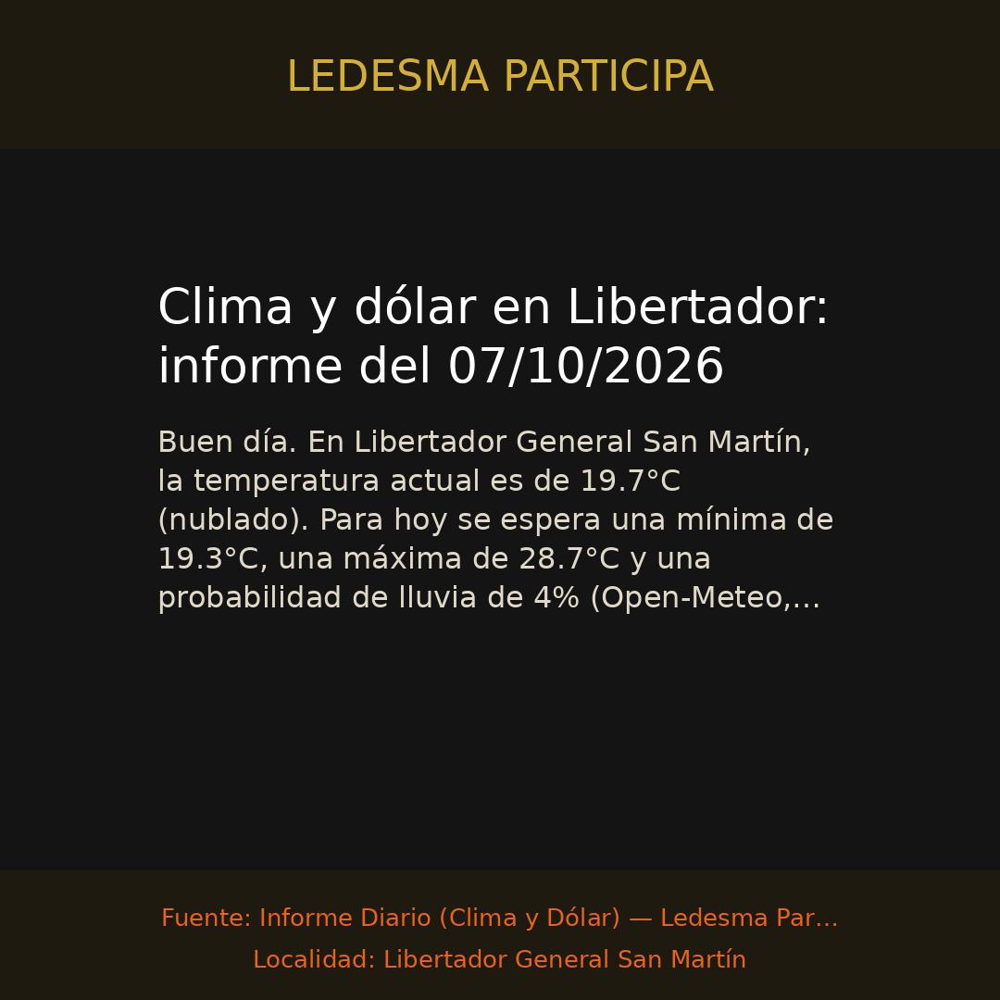

Libertador Gral. San MartínClima y dólar en Libertador: informe del 07/10/2026
Buen día. En Libertador General San Martín, la temperatura actual es de 19.7°C (nublado). Para hoy se espera una mínima de 19.3°C, una máxima de 28.7°C y una probabilidad de lluvia de 4% (Open-Meteo…